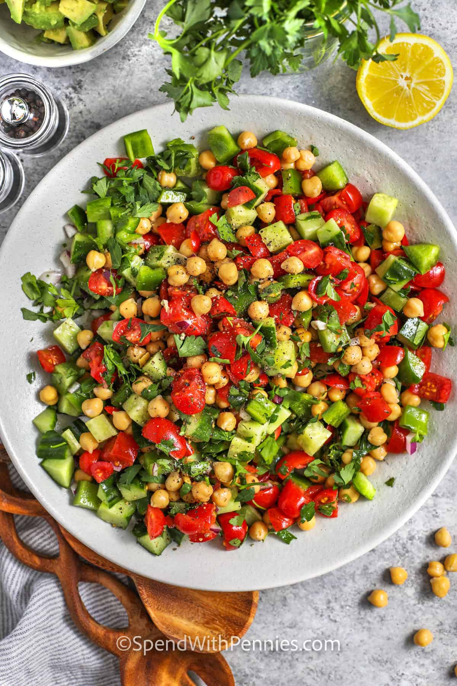

Home
Chickpea Salad

About the Appetizer
This easy salad recipe is the perfect side dish for almost any meal,
or a great lunch. It's packed with protein and nutrients, and the
dressing is fresh and needs just a few ingredients.
Ingredients
- 2 cups grape tomatoes (halved)
- 2 cups diced cucumber
- 15.5 ounces chickpeas (drained and rinsed, 1 can)
- 3/4 cup diced green bell pepper
- 1/2 cup chopped fresh parsley
- 1/4 cup finely diced red onion
- 1/2 lemon (juiced)
- 1 avocado (optional)
Dressing
- 1/4 cup olive oil
- 2 tablespoons red wine vinegar
- 1/2 teaspoon cumin
- 1/4 teaspoon salt
- 1/4 teaspoon black pepper
Instructions
- In a medium bowl, combine tomatoes, cucumber, chickpeas, bell pepper,
parsley, and red onion.
- Add the olive oil, vinegar, cumin, salt, and pepper.
Toss well to combine.
- If using, cut the avocado into cubes and place in a small bowl.
Squeeze the juice from 1/2 of a lemon over the avocado
and gently stir to combine. If not using avocado, squeeze 1 to 2
tablespoons lemon juice over the salad and toss.
- Refrigerate for at least one hour before serving.